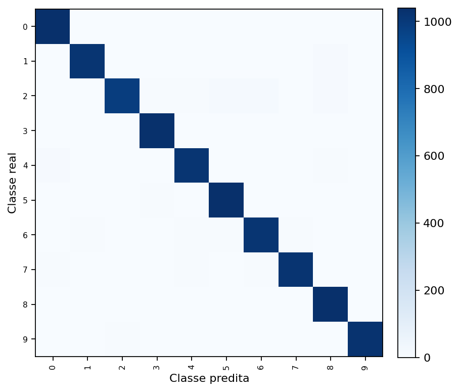
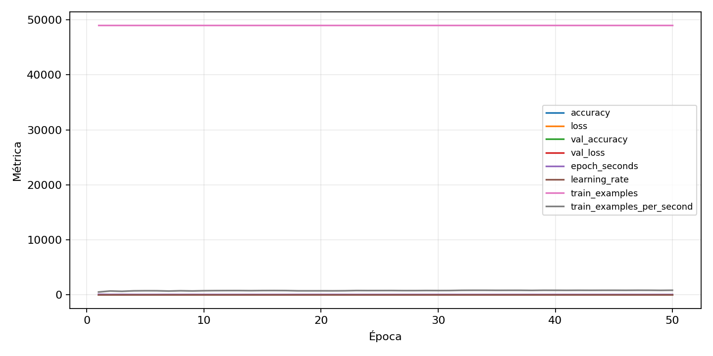

| n_samples | 10500 |
|---|---|
| loss | 0.1496189683675766 |
| accuracy | 0.9742857142857143 |
| balanced_accuracy | 0.9742857142857142 |
| macro_f1 | 0.9742435018442297 |


| Índice | Classe | Suporte | Precisão | Recall | F1 |
|---|---|---|---|---|---|
| 0 | 0 | 1050 | 0.9728718428437793 | 0.9904761904761905 | 0.9815950920245399 |
| 1 | 1 | 1050 | 0.9816602316602316 | 0.9685714285714285 | 0.9750719079578141 |
| 2 | 2 | 1050 | 0.984015984015984 | 0.9380952380952381 | 0.9605070697220869 |
| 3 | 3 | 1050 | 0.9709193245778611 | 0.9857142857142858 | 0.9782608695652174 |
| 4 | 4 | 1050 | 0.9722753346080306 | 0.9685714285714285 | 0.9704198473282442 |
| 5 | 5 | 1050 | 0.9682242990654205 | 0.9866666666666667 | 0.9773584905660377 |
| 6 | 6 | 1050 | 0.9667300380228137 | 0.9685714285714285 | 0.967649857278782 |
| 7 | 7 | 1050 | 0.9779482262703739 | 0.9714285714285714 | 0.9746774964166268 |
| 8 | 8 | 1050 | 0.9637209302325581 | 0.9866666666666667 | 0.9750588235294118 |
| 9 | 9 | 1050 | 0.9856046065259118 | 0.9780952380952381 | 0.9818355640535372 |
{"adapter":"kmnist","balance_mode":"all_raw","class_names":["0","1","2","3","4","5","6","7","8","9"],"dataset":"kmnist","dataset_options":{},"dataset_root":"/home/msduda/datasets-tcc/kmnist","native_channels":1,"normalization":"unit_interval","num_classes":10,"protocol":{"checkpoint_monitor":"val_macro_f1","dtype_policy":"mixed_float16","early_stopping":{"patience":50,"restore_best_weights":true},"evaluation_augmentation":false,"input_channels":"native","optimizer":"Adam","pretrained_weights":false,"reduce_lr_on_plateau":{"factor":0.3,"min_lr":1e-07,"patience":50},"resize":"proportional_padding","test_time_augmentation":false,"training_from_scratch":true},"seed":42,"source_fingerprint":"8928d478d8d23938a73b4f4a92c407bf3d74beff1e0e67e3644d6ecdc30cf828","source_manifest":{"class_names":["0","1","2","3","4","5","6","7","8","9"],"joined_samples":70000,"metadata":{"layout":"kmnist-component-npz"},"name":"kmnist","native_channels":1,"source_path":"/home/msduda/datasets-tcc/kmnist","splits":{"test":10000,"train":60000},"target_size":64},"target_size":64,"test_fraction":0.15,"train_fraction":0.7,"training":{"augmentation":{"brightness_delta":0.0,"contrast_lower":1.0,"contrast_upper":1.0,"cutout_max_frac":0.0,"cutout_prob":0.0,"flip_lr":false,"noise_std":0.0,"translate_frac":0.0,"zoom_max":1.0,"zoom_min":1.0},"batch_size":288,"default_image_size":64,"dtype_policy":"mixed_float16","early_stopping_patience":50,"extra_fraction":0.0,"image_size_overrides":{"gtsrb":128},"keras_verbose":1,"learning_rate":0.0003,"max_epochs":50,"preprocess_cache_max_mib":0,"reduce_lr_factor":0.3,"reduce_lr_min_lr":1e-07,"reduce_lr_patience":50,"shuffle_buffer_max_mib":0},"validation_fraction":0.15}
{"epochs_completed":50,"epochs_recorded":50,"evaluation_seconds":21.27423305100092,"fit_seconds_current_attempt":3825.521617971999,"max_epoch_seconds":95.25850153699866,"max_epochs":50,"mean_epoch_seconds":63.70390354521991,"mean_train_examples_per_second":774.4807801352598,"median_train_examples_per_second":779.4903986673667,"min_epoch_seconds":58.702198384999065,"selected_checkpoint":"/mnt/e/tcc-benchmark/outputs/kmnist-alldata-noaug-batch-sweep-2026-08-06/batch-288/kmnist/runs/kmnist__unit_interval__all_raw__seed-42/checkpoints/best.keras","total_seconds":3185.1951772609955,"training_seconds":3185.1951772609955,"wall_seconds_current_attempt":3852.299858306}
{"elapsed_seconds":3852.3443339749992,"event_counts":{"data_preparation_end":1,"data_preparation_start":1,"epoch_end":50,"evaluation_end":1,"evaluation_start":1,"fit_end":1,"fit_start":1,"periodic":756,"run_completed":1,"train_start":1},"generated_at":"2026-08-07T21:49:13.028+00:00","gpu_backend":"pynvml","interval_seconds":5.0,"metrics":{"cpu_percent":{"count":814,"max":16.9,"mean":12.696805896805898,"min":0.0,"p50":12.9,"p95":15.7},"disk_data_free_bytes":{"count":814,"max":998271246336.0,"mean":998271184292.1671,"min":998271176704.0,"p50":998271184896.0,"p95":998271184896.0},"disk_data_percent":{"count":814,"max":2.7,"mean":2.7,"min":2.7,"p50":2.7,"p95":2.7},"disk_data_total_bytes":{"count":814,"max":1081101176832.0,"mean":1081101176832.0,"min":1081101176832.0,"p50":1081101176832.0,"p95":1081101176832.0},"disk_data_used_bytes":{"count":814,"max":27837644800.0,"mean":27837637211.832924,"min":27837575168.0,"p50":27837636608.0,"p95":27837640704.0},"disk_output_free_bytes":{"count":814,"max":207210762240.0,"mean":207197917576.4914,"min":207196790784.0,"p50":207197700096.0,"p95":207197990912.0},"disk_output_percent":{"count":814,"max":79.3,"mean":79.3,"min":79.3,"p50":79.3,"p95":79.3},"disk_output_total_bytes":{"count":814,"max":1000186310656.0,"mean":1000186310656.0,"min":1000186310656.0,"p50":1000186310656.0,"p95":1000186310656.0},"disk_output_used_bytes":{"count":814,"max":792989519872.0,"mean":792988393079.5085,"min":792975548416.0,"p50":792988610560.0,"p95":792989429760.0},"elapsed_seconds":{"count":814,"max":3852.283533,"mean":1936.5496665847666,"min":0.038868,"p50":1941.6816170000002,"p95":3677.3160055000003},"gpu_count":{"count":814,"max":1.0,"mean":1.0,"min":1.0,"p50":1.0,"p95":1.0},"gpu_memory_percent":{"count":814,"max":56.43196105957031,"mean":53.68565974130092,"min":47.65157699584961,"p50":53.3599853515625,"p95":55.7672119140625},"gpu_memory_total_bytes":{"count":814,"max":8589934592.0,"mean":8589934592.0,"min":8589934592.0,"p50":8589934592.0,"p95":8589934592.0},"gpu_memory_used_bytes":{"count":814,"max":4847468544.0,"mean":4611563057.061425,"min":4093239296.0,"p50":4583587840.0,"p95":4790367027.2},"gpu_temperature_c":{"count":814,"max":53.0,"mean":44.304668304668304,"min":39.0,"p50":43.0,"p95":51.0},"gpu_utilization_percent":{"count":814,"max":100.0,"mean":27.93243243243243,"min":1.0,"p50":31.0,"p95":51.0},"process_cpu_percent":{"count":814,"max":245.1,"mean":167.35921375921376,"min":0.2,"p50":170.75,"p95":204.935},"process_read_bytes":{"count":814,"max":11247616.0,"mean":11215346.162162162,"min":7933952.0,"p50":11247616.0,"p95":11247616.0},"process_rss_bytes":{"count":814,"max":3972386816.0,"mean":3746771648.4717445,"min":1029914624.0,"p50":3845668864.0,"p95":3936550297.6},"process_vms_bytes":{"count":814,"max":48784408576.0,"mean":48375198707.42015,"min":39580209152.0,"p50":48500928512.0,"p95":48702255104.0},"process_write_bytes":{"count":814,"max":1146880.0,"mean":1131854.6240786242,"min":4096.0,"p50":1146880.0,"p95":1146880.0},"ram_available_bytes":{"count":814,"max":15540551680.0,"mean":12990239857.218674,"min":12767227904.0,"p50":12890472448.0,"p95":13580897689.6},"ram_percent":{"count":814,"max":23.2,"mean":21.835380835380835,"min":6.5,"p50":22.4,"p95":23.0},"ram_total_bytes":{"count":814,"max":16619085824.0,"mean":16619085824.0,"min":16619085824.0,"p50":16619085824.0,"p95":16619085824.0},"ram_used_bytes":{"count":814,"max":3851857920.0,"mean":3628845966.781327,"min":1078534144.0,"p50":3728613376.0,"p95":3818311065.6}},"sample_count":814,"schema_version":1}